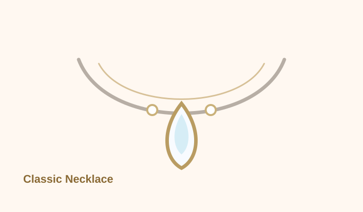
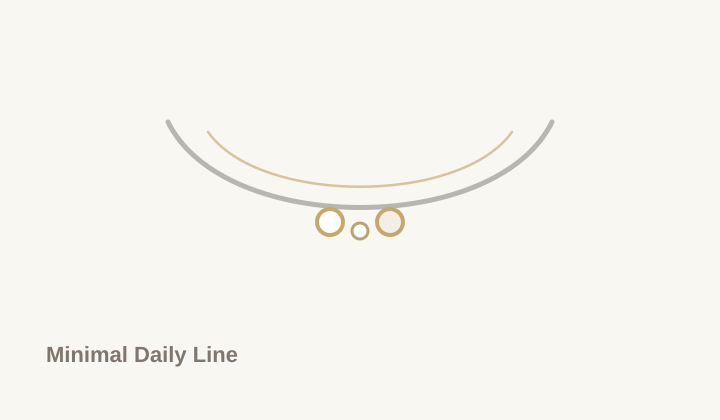
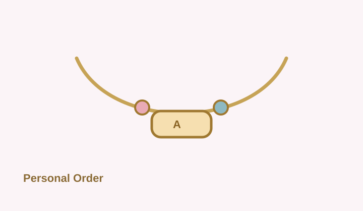
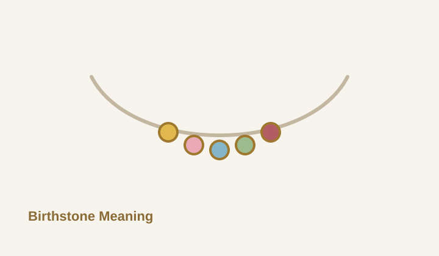
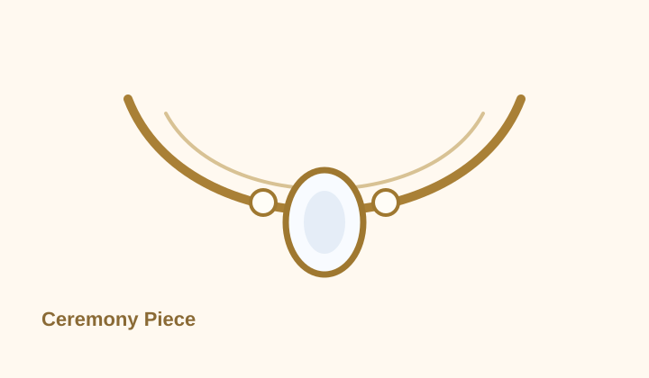

產品展示
Soft Jewelry Studio 目前以五個項鍊系列作為設計起點。你可以先選擇接近的風格，再進入 3D 設計工作台調整吊墜、寶石與排列方向。
Curated Collections
以系列陳列，而不是用規格堆滿頁面
每個系列都有明確情境：日常、送禮、個人符號、誕生石或儀式場合。先看整體氣質，再進入 3D 工作台做細節調整。
Selection Assist
不知道從哪一款開始，可以先用需求選
每個系列都可以再進 3D 工作台微調。先選接近用途的方向，比一開始比較所有細節更快，也更接近實際訂製流程。
Fit & Gift Guide
選購前先確認三件事
參考精品與珠寶電商品牌常見流程，先把用途、配戴長度與個人化方向收斂，後續詢問會更快得到可報價的設計方向。
日常、生日、週年、婚禮或拍攝場合會影響主石大小與光感強度。
38-43 cm 偏鎖骨短鍊，40-45 cm 適合多數日常，45 cm 以上會更有垂墜感。
可先準備誕生石、初始字母、刻字方向、禮物訊息與希望完成時間。
Atelier Readiness
像進精品專櫃前一樣，先整理可討論的設計資訊
參考精品珠寶常見的尺寸教育、刻字服務、保養提醒與顧問式詢問流程，將訂製前資訊整理成四個可行動步驟。這些資訊不需要後端，也能讓訪客更快進入 3D 設計與詢問。
先決定鎖骨短鍊、日常鍊長或垂墜比例，再用 3D / AR 檢查主石落點。
姓名縮寫、日期、誕生石、關係寓意與禮物訊息，都可以先整理成一段訂製方向。
日常高頻配戴優先穩定材質與低調結構；珍珠、鍍色與寶石則需要更明確的保養提醒。
送出詢問前，先準備預算、希望完成時間、鍊長、金屬色與 AR 試戴截圖。





配戴投影與設計方向
Daily Projection
日常鎖骨比例
以 38-43 cm 細鍊、珍珠或小鑽為主，讓視覺重心貼近鎖骨，適合襯衫、針織與日常穿搭。
套用 3D 設計方向Gift Meaning
誕生石與關係寓意
用月份寶石、初始字母或刻字牌建立可溝通的故事，讓禮物不只停留在外觀。
建立寓意組合Occasion Styling
儀式與拍攝存在感
放大主石、垂墜位置與鍊型線條，先用 3D 與 AR 確認在禮服、襯衫或正式穿搭上的比例。
預覽儀式款詢問前可以先準備
- 預計用途：日常配戴、送禮、紀念日、婚禮或其他場合。
- 喜歡的色系：銀色、金色、玫瑰金、珍珠白、藍色、粉色或綠色寶石。
- 配戴長度：貼近鎖骨、一般鎖骨鍊，或希望更長的垂墜感。
- 預算範圍與希望完成時間。